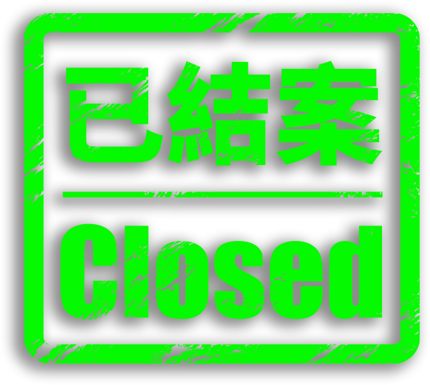
KEELUNG NEEDS YOU!
街上接連傳出怪奇事件
誤入被遺忘角落的人們無不失魂落魄
這座城市眼看就快要淪陷
我們急需援手獵捕出逃的怪奇們
一起解救這個被怪奇霧雨困住的城市！
怪奇博物館秘密探員養成計畫
被什麽招喚而進到這個秘密時空的你
正是我們尋尋覓覓的探員嗎？
捕捉怪奇是個危險任務！
我們安排了秘密養成計畫
以確保每位探員擁有足夠的能力與勇氣
趕緊加入培訓，和我們一起拯救基隆吧！


Lesson 01
雞籠足奇怪
「有下雨嗎？你為什麼穿雨鞋？」
「請你拿擦子給我！不是這個叉子啦～」
「基隆有百貨公司嗎？」
你是否注意到基隆有些議題正在發生？
你是否有機會好好聊聊基隆人的生活？
你是通勤族嗎？
你了解旭川嗎？
你對都市發展有自己的定見嗎？
大家在討論公共議題時，常常陷入爭執，彷彿認同對方觀點，自己就輸了。
但輸與贏之外，是否還有更多元的討論方式？
阿普蛙將帶領民眾以遊戲的方式討論基隆在地議題，培養社區意識。
帶著大家反思每個觀點背後的感受與價值觀，透過換位思考、好好對話，讓社會能以更和諧的溝通方式共融共好。


備註：凡報名必修課者，優先錄取實習課(實境遊戲)

雞籠足奇怪 x 阿普蛙工作室
你對都市發展有自己的定見嗎？
大家在討論公共議題時，常常陷入爭執，彷彿認同對方觀點，自己就輸了。
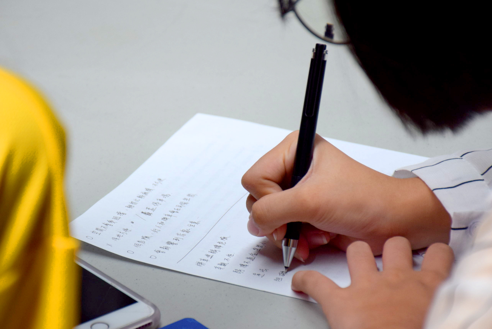
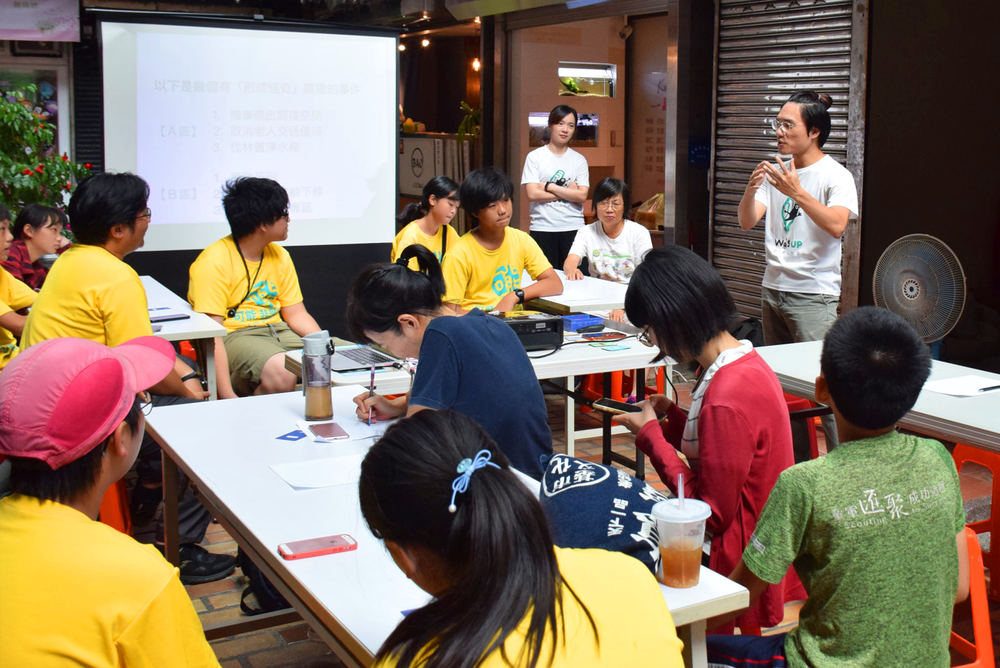
但輸與贏之外，是否還有更多元的討論方式？
阿普蛙帶領民眾以遊戲的方式討論基隆在地議題，培養社區意識。
帶著大家反思每個觀點背後的感受與價值觀，透過換位思考、好好對話，讓社會能以更和諧的溝通方式共融共好。
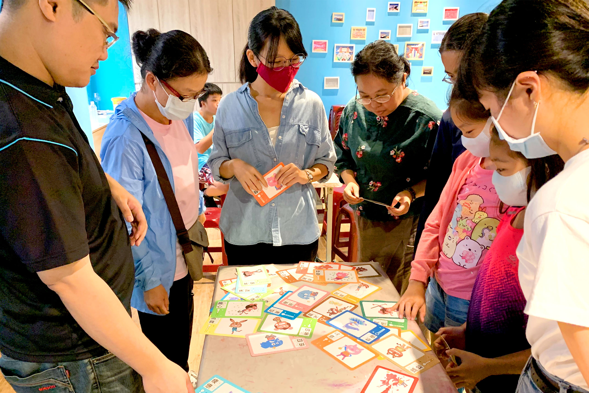
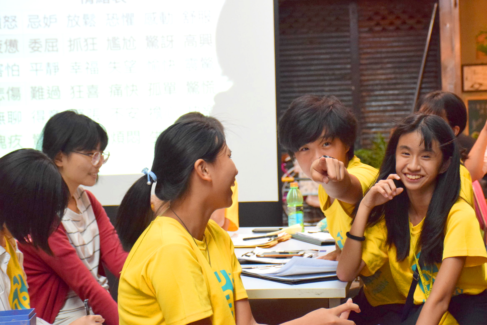
------阿普蛙心得分享-------
有別於以往，這次的社區議題工作坊將討論的重點從「如何提升公民思辨品質」轉到「＃如何和平解決爭端」，相信對來參加的社區夥伴來說，不論是小學生、自學生、上班族、菜籃族⋯⋯都是很特別的體驗。阿普蛙這邊也很高興地宣佈，全五場的公民夥伴們，都有達成遊戲目標：「在兩種類型的議題當中，各至少成功解決一個議題。👏」
.
其中讓蛙蛙印象最深的一場，是人數最多，火藥味也最重的「文安社區最終場」。該場次公民們選擇了「＃是否廢除死刑」的議題，來作為練習解決爭端的情境。 中間一度激烈到作為主持人的蛙蛙都快被轟下台啦。但正因為有這麼強烈的情緒能量
.
最戲劇性的是，雙方逐步提出對方可能的感受與需求時，才發現，原來彼此有 #許多共同的感覺跟價值觀 呢。這些體會，也許可以穿過大腦的掌控，進一步地在大家的心中，留下一些什麼吧！
.
「如果我們能發現，立場與我們不同的公民，不是邪惡或愚蠢的敵人；而是與我們有共通感受與需要的夥伴，那麼所有爭端的解決，需要的也許就只是時間而已了。」健毅如此的總結。
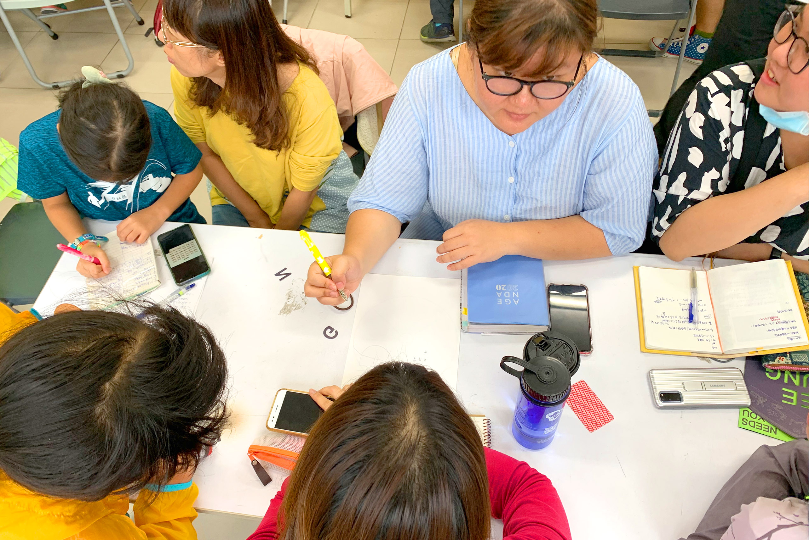
Lesson 02
咱的聲音

基隆文化中心大廳
2020/10/18(日) 14:30 戲長約一小時
2020藝術紮根—基隆社區共演計畫/慾望劇團
傳說，基隆有一座「怪奇博物館」，收藏著許多基隆特有的館藏，每到午夜12點，原本沒有生命的館藏，就會幻化成「怪奇」一起甦醒……
這些怪奇有許多故事、有個性喜好、會說唱舞蹈，甚至有超能怪力。但他們也有許多心事、有一些不為人知的煩惱，他們的心聲你甘知影？是否有聆聽過他們的聲音？
「我在昭和六年就蓋好，台灣第一部好萊塢電影就是在我面前拍的！」
「我是基隆最繁華的委託行來的，以前基隆是全台灣最潮的城市！」
「我這麼好吃、長得這麼好看，竟然只是個配菜！燙青菜都漲價變40了，我還在20元！太過分了吧！」
「通勤是很痛苦又沒有意義的事。我聽過人類太多的抱怨了，我的人生好像就只有負能量而已。」
「天空被蓋起來了，我在污濁惡臭不見天日的地下河道，接收每個人的垃圾與廢水……」
基隆名產「吉古拉」最大的困擾是什麼？曾經風光的「旭川河」變成被遺棄的臭水溝，還有人記得他嗎？盛極一時的「委託行」曾經驕傲又時髦，她忘不了的過往是什麼？老紳士「林開郡洋樓」，是如何從眾人的焦點變成陰森的鬼屋？基隆人的集體記憶「通勤」又有怎麼樣的無奈心聲？
一個夜裡，怪奇們甦醒，隨著故事進展，揭開怪奇們的神秘面紗，解密他們的前世今生。他們為什麼來到「怪奇博物館」？他們的下一步又要前往何處？10月18日，這一切的答案，讓《咱的聲音》回答你。
編導：黃品文
詞曲：黃品文
編曲：張丞雅、陳俊昇、陳則皞
服裝設計：陳嫺儒
燈光設計：周鴻凱
執行製作：鄭孟庭
排練助理：陳彥竹、周彥邦
主要演員：鄭孟庭、游博凱、沈柏岑、劉佳宇、林宜靜
社區演員：謝志烽、簡曉萍、謝鳳玲、游明真、李小珊、吳美照、蔡顏鴻、呂紹姿、詹淑華、徐驊均、葉巧雯、李岳翰、劉宸碩、林佳慧
咱的聲音 x 慾望劇團
還記得那天下著雨，觀眾席都還沒開放時就排了好多人，一瞬間200個位子就被坐滿了～好感人！一開始大家看戲好專注好冷靜，不怎麼敢笑出聲音來，還真讓我們捏了一把冷汗。隨著戲劇的推進，從歡樂搞笑漸漸轉變為遺憾與感傷，在進入到本齣戲的最高潮「怪奇的聲音」歌曲時，現場也沈浸在有點沈重又有點感動的氣氛中，直到劇終。
怪奇的題材從2019年底與 #雞籠怪奇製作團隊 共同發想而來，7月舉辦了兩場社區工作坊與民眾們共創歌詞，最終在品文導演的筆下完成整個劇本。這段時間的排練大家從陌生到緊密，每次每次都能感受到距離的變化，向著對方一步一步地越靠越近，當團隊中的每個人都明白認同這齣戲欲傳達出的理念時，大家會隨著劇情在同一時刻感受、感觸、感傷、感動...這朵花才能在台上盛開美麗，這齣戲缺一不可，劇團演員、社區演員、技術人員、製作團隊，還有觀眾你，昨天的所有人都好靠近靠好近～這是慾望覺得最感動的事情了！
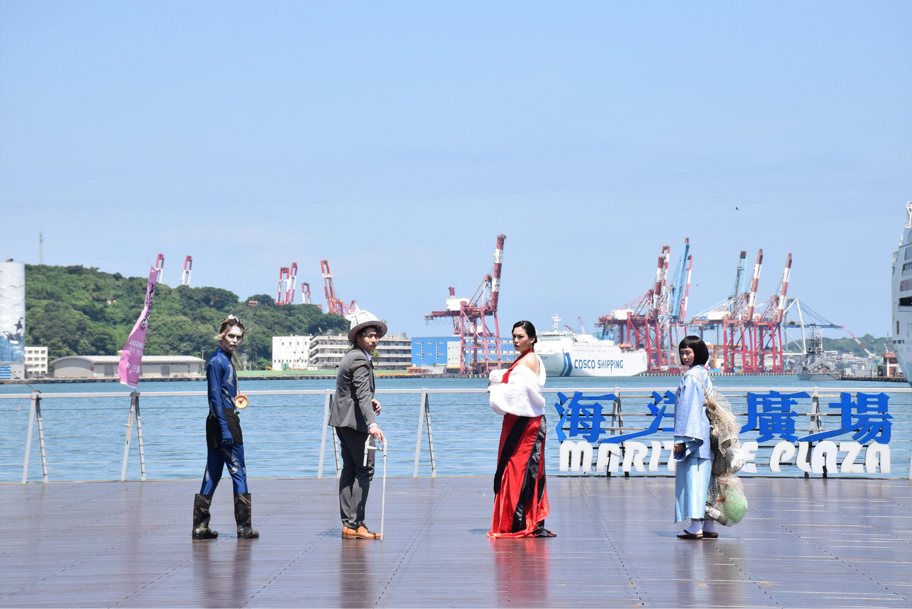
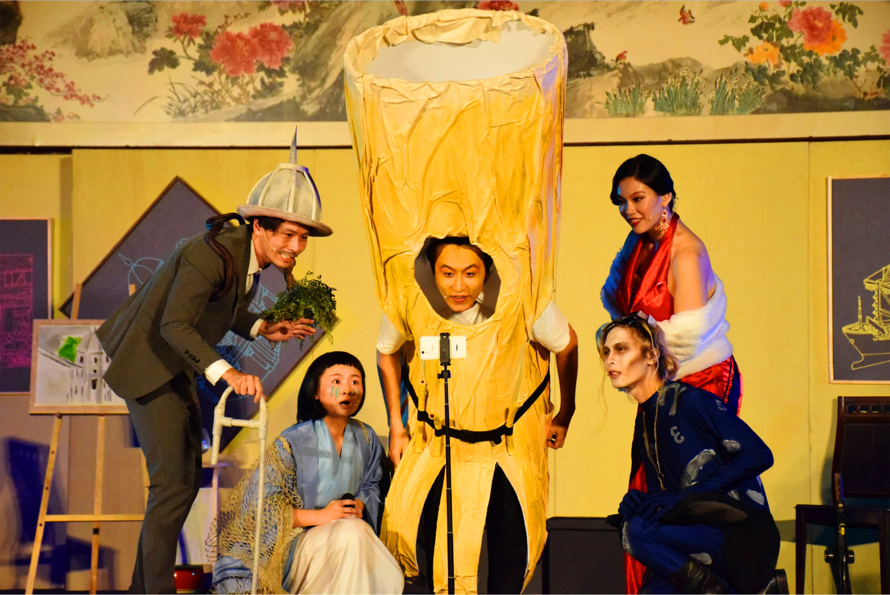
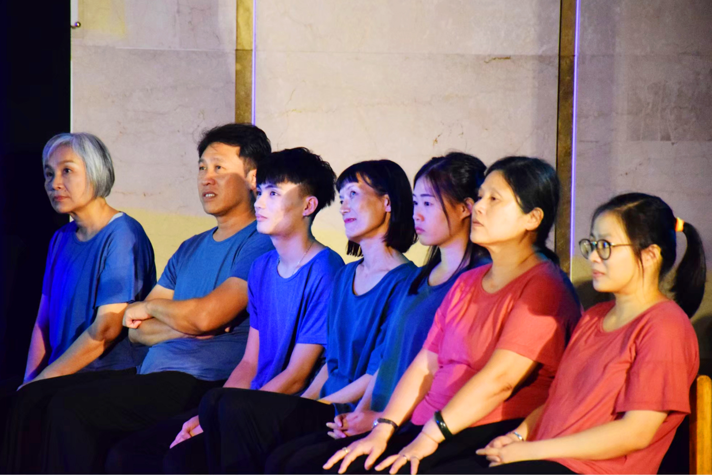
#慾望劇團團長 品文 謝幕時說的話
戲劇最後還是要回歸到真實生活，你認識你所生活的這個地方嗎？ 在我們既熟悉卻又可能其實不怎麼熟悉的基隆，希望這齣戲除了帶給大家歡樂與感動之外，還能有不同的思考與感觸。
或許下次當你經過海洋廣場高架橋時、經過崁仔頂魚市場時、經過鐵門拉下的委託行街時、經過火車客運站時；你會多停留幾秒鐘，抬起頭/低下頭/遠遠地 看向它們⋯⋯
「能在基隆做自己家鄉的戲，是一件很幸福的事情。」－是真心的😊，希望你也同樣這麼覺得～
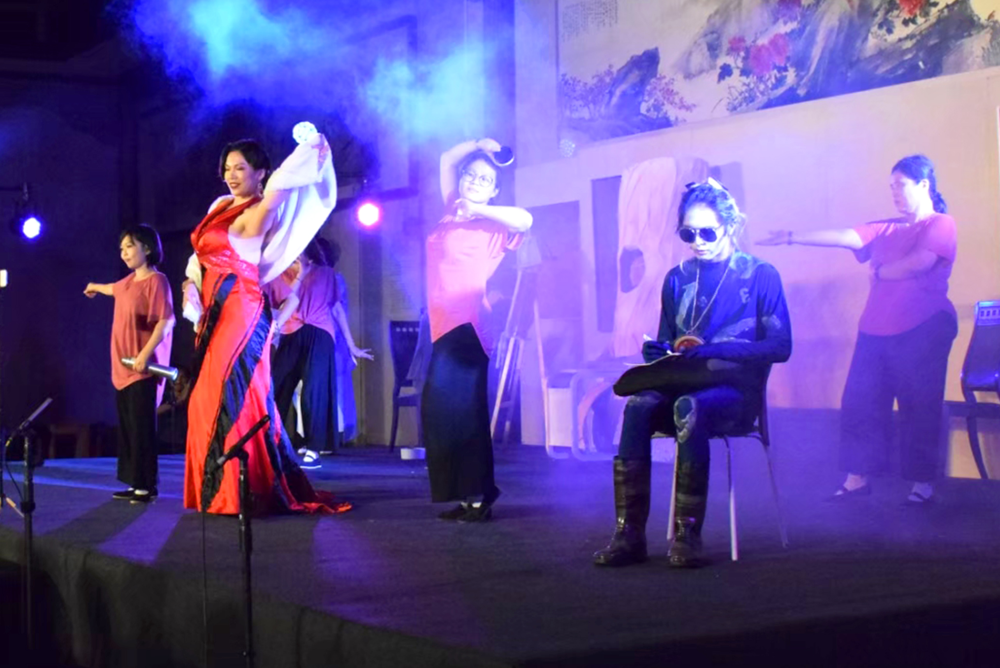
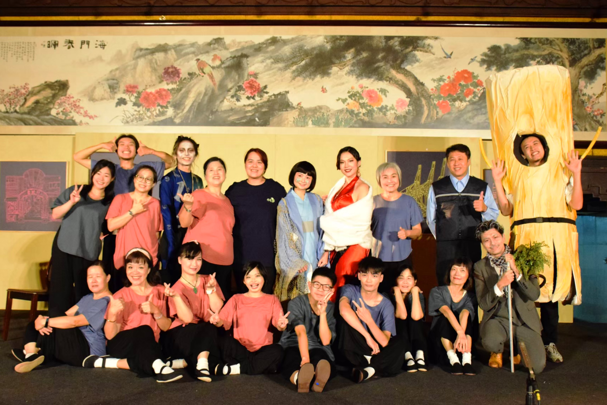
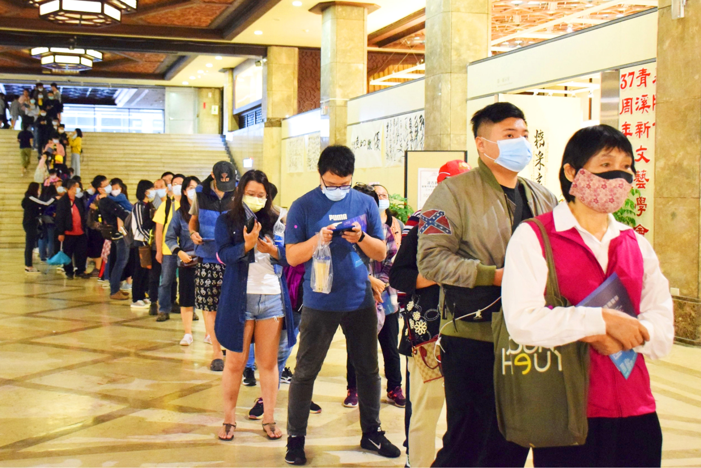
Lesson 03
怪奇逃走中
備註：名額有限，凡報名必修課者，優先錄取本門實習課
Story│實習背景
遊走在這座老城就要被遺忘的街區
一層層揭露那些鮮為人知的雞籠怪奇故事
你以為知道的其實並不是你所以為的
每一個選擇，都可能是翻轉基隆的契機
這座城市的命運就掌握在你手中
你，準備好了嗎？
Feature│實習特色
第一款屬於基隆的城市RPG實境遊戲
在地團隊聯名合作 × 為家鄉量身打造
在地議題 × 城市探索 × 戲劇手法


Apply│實習申請
解謎場域：海洋廣場及其周邊
開放時間：13:00-18:00

Detail│實習細節

1人即可報名

須預約，至指定地點領取道具包
實際遊玩時間約2.5~3小時
(詳見報名表與行前通知)
實際遊玩時間約2.5~3小時
(詳見報名表與行前通知)

建議年紀 12 歲以上

須自備智慧型手機
怪奇逃走中x雞籠怪奇團隊
第一款屬於基隆的城市RPG實境遊戲
在地團隊聯名合作 × 為家鄉量身打造
在地議題 × 城市探索 × 戲劇手法
-----參加者心得-by蘇卜卜-----
雖然走得很累，但這個結合基隆在地議題的實境解謎遊戲真的好好玩，一路解題下來學習到很多，感謝工作團隊的熱情和用心！
-----參加者心得-byTrista Yeh-----
這個遊戲實在是太吸引人了!兩個小傢伙除了說口渴跟想上廁所以外竟然完全沒喊累!這遊戲實在厲害!可惜沒拿到所有小禮物! 晚上回家吃飯之後又趕去看走.光，我只能說這個真的必看!我覺得基隆有這些團隊真的是一件很幸運的事，我開始期待往後每年的活動了!
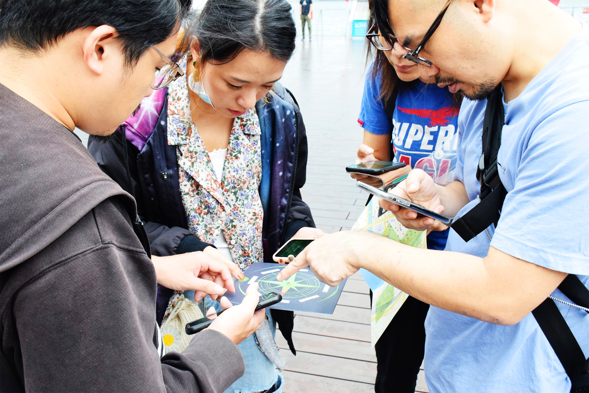
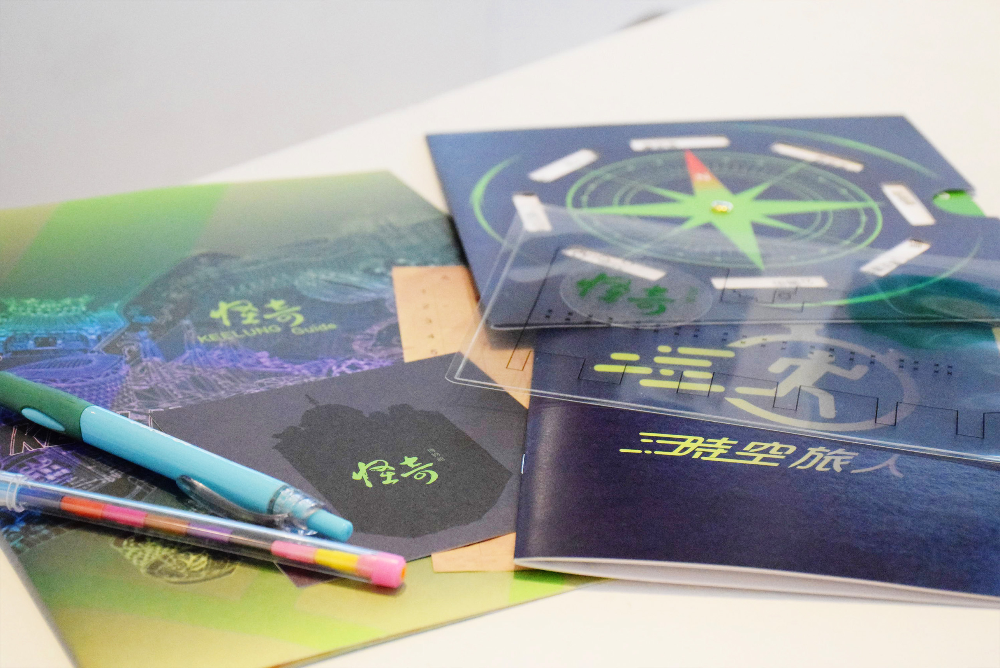
-----參加者心得-by劉璟儀-----
我覺得城市解謎的收穫就是會帶著你走平凡的觀光客景點以外的景點~
這次的活動是基隆市的推廣活動之一，遊戲設計還有心理系學長們的團隊參與在裡面😆每一關都有彩蛋提升遊戲樂趣~！
每一關的設計也都融合在地文化歷史故事，真的有多了解基隆一點點，像是知道旭川河在哪裡，市鳥是黑鳶，市魚是黑鯛，還有市樹是楓香XD
遊戲也帶著我們光顧了一些平時不會注意到的優質小店~我們有幸有小天使隨隊，冷門的在地知識還是可以適時被提點一下，有經驗的隊友再搭配偶爾的暴力破關，2.5小時跑完整個遊戲😝
破關後的關卡說明也會進一步補上基隆歷史小知識，然後才發現每一關的角色設計隱隱約約可以感受到心理學的影子在裡面！
如果只著重在高效率破關會失去很多樂趣，例如美美的閃卡就會跟你說再見了～
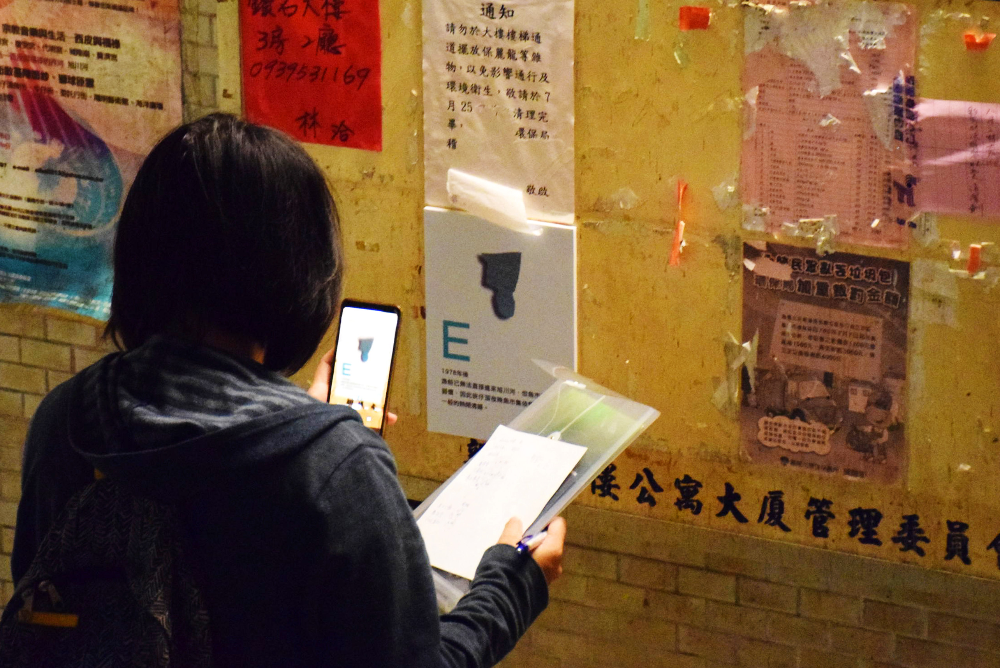
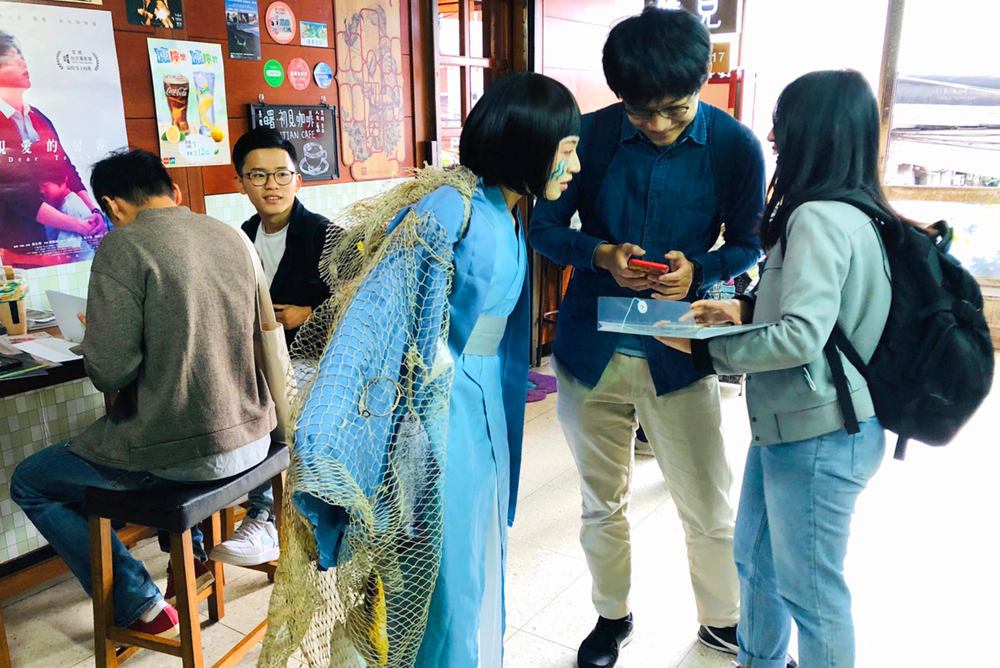
-----參加者心得-by戴秀真-----
【不友善不葉珮】
受邀 參加《#怪奇博物館 秘密探員養成計劃》的封測
由於剛好是個不愛玩遊戲的人，進入遊戲需要花很多時間，雖然保證會很投入，嗯勾以不要拖累他人為前提，所以選擇隊友很重要，必定要比我有耐心更聰明才行，還要包容我是個可能發揮不了作用的湊咖花瓶。
然後我找到的隊友 Summerplayer Chen 黃欣儀 剛好都是衝組的（不然你看 86設計公寓 辦活動沒有停ㄟ！ ) 我們是第一組完成遊戲，顯然是為了過關而過關。
我們沒有聽信怪奇博物館的館員溫馨叮嚀：「對了，找個地方坐下解，也許可以提高精確度唷～」，也不在意好像走過的地方，好像真的有些什麼。我們只看著手上的道具，不斷想往下一處。
結束後聽遊戲設計者分享是很難得的機會！完全沒有留意遊戲有其他彩蛋，應該是說，結束了才發現原來還有這麼多細節。
一向大家都只看表面，原來遊戲不只是遊戲，意涵好深。我喜歡藏很多故事在遊戲裡，是很有趣的一件事，很能理解安排的過程，要用心感受身邊以及對生活保持好奇心/同理心。
一直以來可能都被訓練要趕緊完成一件事情，才能繼續下一步驟，變得不會留意細節，一心一意要趕緊破關，人生只剩下打怪。
討論的過程也挺促咪，因為容易觀察人，所以看大家的反應也反應著其個性與工作行業，哈
要能理性跳脫，不太容易
我們都被自己綁住了
我覺得你們應該都去當秘密探員，不然要怎麼繼續聊天。
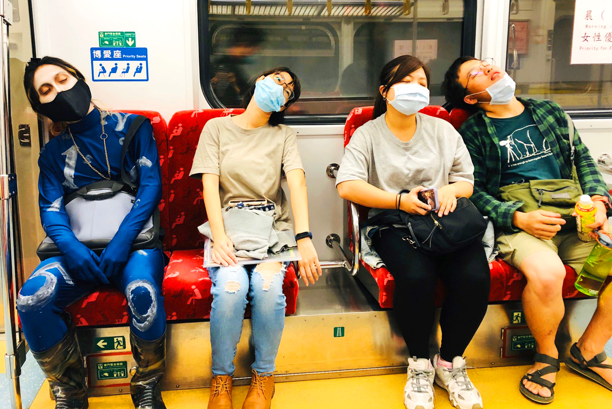
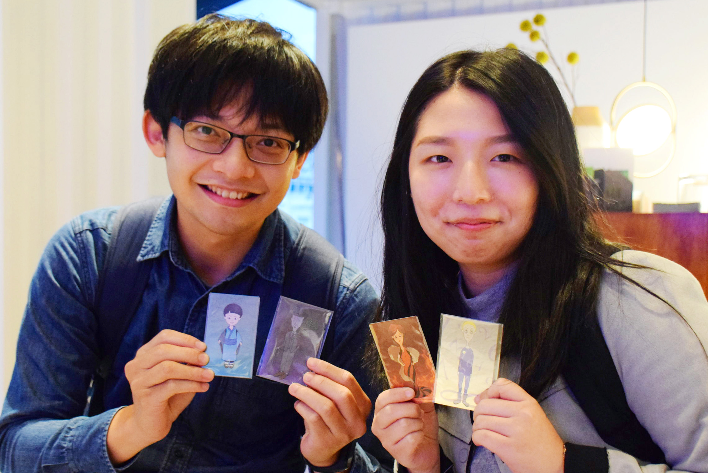